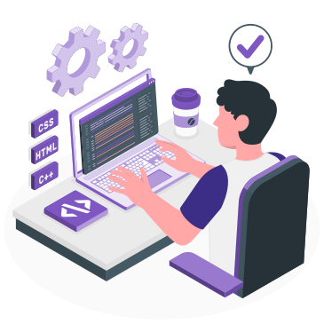

Olá! Eu sou o
João
Localizado em Fortaleza-CE
Apesar de ser iniciante nesse ramo de programação, percebi que tenho uma vocação para isso. Quero aprender na prática as experiêncicas do mercado de trabalho. Sou uma pessoa que aprende as coisas com bastante facilidade e trabalho muito bem em grupo. Tenho interesse focado no desenvolvimento web e, futuramente,mobile Front End, estudando e buscando sempre aprimorar minhas habilidades nessa área.
PRO
JET
OS

Experiências
Estágio Labortório de Informática da UNI7
Início: Agosto 2021.2
Competências
- UI Design Básico
- HTML & CSS
- JavaScript
- Inglês Intermediário
Formações
IAPE - Instituto Adventista Pernambucano de Ensino
Ensino Médio Completo
Uni7 - Universidade Sete de Setembro
Cursando - Previsão: 2025.2
Origamid - Curso Web Design, UX/UI Design e Front End
Cursando